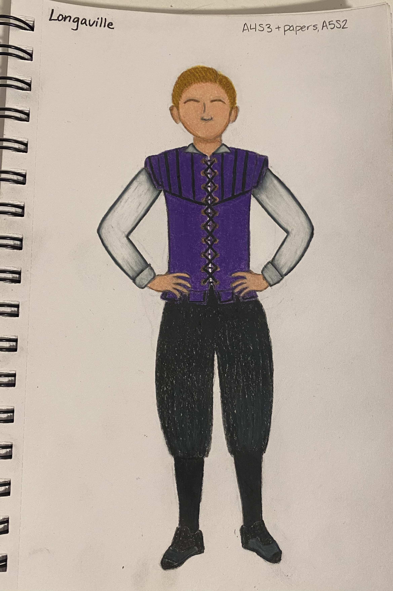
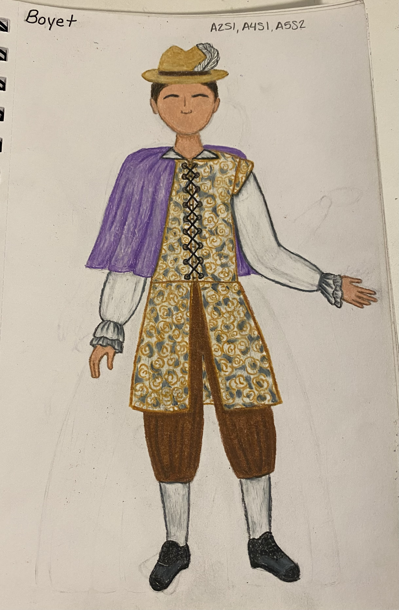

"King Ferdinand"
"King Ferdinand"
King of Navarre
"Berowne"
Lord to King Ferdinand

"Longaville"
Lord to King Ferdinand
 "Don Adriano De Armado"
"Don Adriano De Armado"
A fantastical Spaniard hired by the King to entertain himself and his lords
 "Princess of France"
"Princess of France"
The unnamed Princess of France
 "Rosaline"
"Rosaline"
Lady attending the Princess of France
 "Maria"
"Maria"
Lady attending the Princess of France

"Boyet"
Lord attending the Princess of France
 "Holofernes"
"Holofernes"
A learned and pompous schoolmaster
"Sir Nathaniel"
A parish curate
Whenever I design costumes for a production, one of the most important aspects I focus on is color. With this production of Love's Labour's Lost, the color palette for each character was specifically chosen based on each of their personalities. For example, using common color associations and color psychology, I chose the color red to be for the character Berowne based on his personality because he is quite arrogant and overbearing. Additionally, The Princess of France's color is pastel purple because it is associated with being royal, as well as delicacy and lightheartedness. I also didn't want the colors for each couple to match perfectly, so I instead made each character's color in their pair complimentary so they would look good standing next to each other, without making it obvious that each pair would end up together.
Another aspect in my design for this production is the time period. The play doesn't list a time period for when it takes place, so we didn't specify a certain year, but we decided to have it take inspiration roughly from the late Renaissance to the early 18th century. For the costumes, I had the King and his men be dressed in the conventions from the late Renaissance to reference the fact that the men took an oath to not take part in the finer things in life, including newer fashions. Alternatively, the Princess and her ladies are dressed in the silhouette from the 18th century as the women dress with the more recent fashion trends.